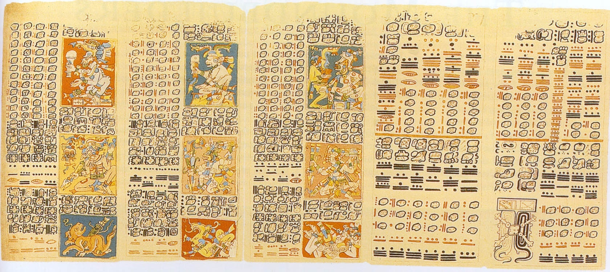
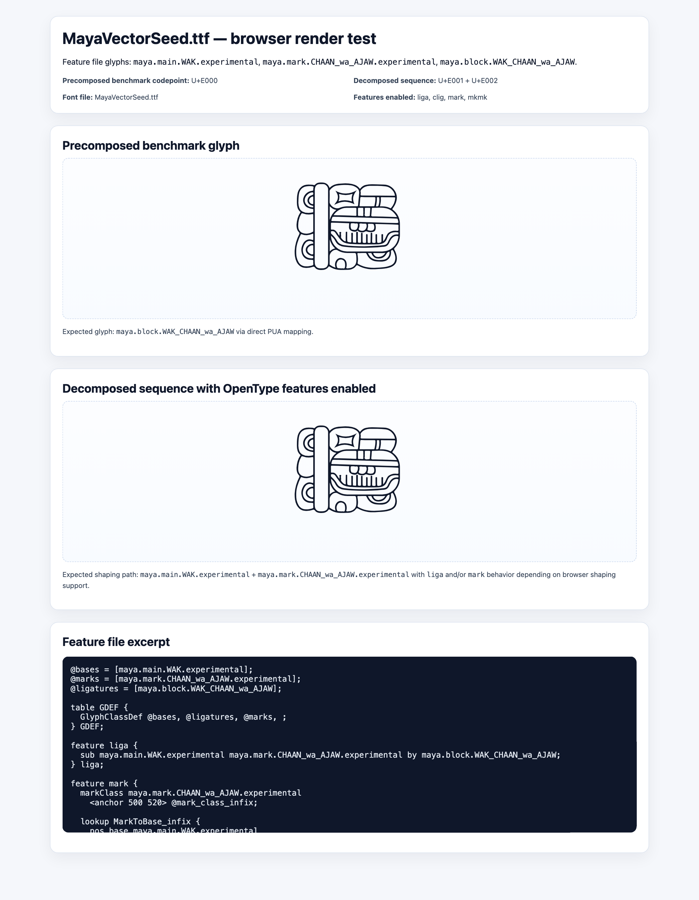

Maya Font
Maya is a Latin-input → Maya-output converter font/pipeline. Not a Maya-flavoured Latin alphabet. A user types Latin/transliteration; the product outputs Maya hieroglyphic signs, blocks, substitutions, or composed glyph sequences.
Updated 2026-05-06 03:08 CEST. Overnight converter scaffold is in place: parser, proof vocabulary, render plan, and HarfBuzz proof pass for the recovered WAK/CHAAN/wa/AJAW benchmark.
Structural pipeline
PASS
make validate and make doctor pass.
Latin outline expansion
STOP
`adhesion`, `n/o`, `h/i` are not design direction. They were only render smoke.
First converter proof
PASS
WAK@CHAAN-wa@AJAW maps to E001,E002 and shapes into maya.block.WAK_CHAAN_wa_AJAW.
What we are building
- Latin/transliteration input.
- Mapping table to Maya signs/components.
- OpenType
liga/cligsubstitutions andmark/mkmkpositioning. - Maya hieroglyphic output, block/composite sign logic.
Overnight proof receipt
The first shippable proof is deliberately tiny, but it exercises the right product path: typed epigraphic input → parser → mapping → OpenType shaping input → composed Maya glyph.
Input: WAK@CHAAN-wa@AJAW Parser: main WAK, infix chain CHAAN/wa/AJAW Mapping: E001 + E002 HarfBuzz: hb-shape recovered/source-snapshot/output/MayaVectorSeed.ttf --unicodes=E001,E002 --features=+liga Receipt: [maya.block.WAK_CHAAN_wa_AJAW=0+1000] Status: converter scaffold PASS, broader vocabulary still planned

maya_ref.jpg

font_render_test.png, existing OpenType stack evidence
Kimi north-star report
# Kimi Visual Inspection — Maya North Star
**Date:** 2026-05-05
**Inspector:** Visual Kimi
**Correction Applied:** Product reframed from "Maya-flavored Latin font" to "Latin-to-Maya converter font"
---
## Verdict
**STOP. DO NOT EXPAND.**
The current n/o "Latin legibility gate" is completely off-target. It tests whether generic rounded rectangles read as Latin lowercase. This project is not building a Latin typeface. The n/o proof is render smoke—proof that the SVG-to-font pipeline can output shapes, nothing more.
The actual product is a **converter font**: Latin character input → Maya grapheme mapping → composed hieroglyphic output via OpenType substitution and mark positioning.
**The pipeline is pointing at the wrong target. Correct immediately.**
---
## Reference Traits (What Maya Actually Is)
### From `maya_ref.jpg` (Madrid Codex)
- **Block composition**: Maya writing is modular glyphs stacked/superimposed in square blocks
- **Main signs + affixes**: Large central elements (T-main signs) surrounded by smaller prefix/suffix/superfix/subfix/infix elements
- **Inscriptional rhythm**: Grid-like reading order (left→right, top→bottom within blocks)
- **Sign clusters**: Multiple graphemes fused into single visual units via ligation
### From `dog_with_infix.svg`
- **Mask/infix architecture**: Red circle (T109 infix) positioned inside a main sign using anchor points
- **SVG group structure**: Named layers (`top`, `bottom`, `center-hole`, `anchor-infix`) indicate compositional logic
- **Transform stacking**: Nested transforms for component positioning
### From `huvudtecken.svg`
- **Complex compound glyphs**: Multiple elements fused into single visual units
- **Organic/mechanical tension**: Curved and angular forms coexisting
- **Internal counter structures**: Negative space as active design element
### From `venus_omen_v4_final.svg`
- **Explicit anchor system**: `anchor-infix` with data-bounds for component placement
- **Modular assembly**: T190 (main) + T109 (infix) + T510/T1030 (other components)
- **Mask-based positioning**: SVG masks define where infixes sit
### From `font_render_test.png`
- **Working OpenType stack**: `liga` (substitution) + `mark`/`mkmk` (positioning) functional
- **Decomposed input**: U+E001 (base) + U+E002 (mark) → composed glyph via features
- **Glyph naming convention**: `maya.main.WAK`, `maya.mark.CHAAN_wa_AJAW`, `maya.block.WAK_CHAAN_wa_AJAW`
### From `tuun_ni_rendered.png`
- **Rendition fidelity**: Technical capability to render complex Maya forms exists
---
## Why Latin Legibility Is Not Just Insufficient—It's Wrong
| Wrong Question | Right Question |
|---------------|----------------|
| Does this n read as Latin? | Does typing "wa" output a Maya wa grapheme? |
| Is the o counter balanced? | Does combining a base + affix position correctly via mark features? |
| Does it look like lowercase? | Does it look like a Maya sign block? |
| Can I set English text? | Can I input Latin transliteration and get Maya output? |
The current n/o proof validates:
- ✅ SVG path rendering
- ✅ Font file generation
- ✅ Browser display
It does NOT validate:
- ❌ Maya component inventory
- ❌ Input-to-output mapping logic
- ❌ OpenType substitution rules
- ❌ Mark positioning behavior
- ❌ Actual converter product functionality
**Continuing to expand Latin glyphs is building the wrong product.**
---
## Next Prototype Brief (Corrected Architecture)
### Product Definition
A font that takes Latin character input (a-z for syllabic, other conventions for logographic) and outputs Maya hieroglyphic signs via:
1. **Character mapping**: Latin → PUA codepoints for Maya components
2. **Substitution**: `liga`/`clig` fuse components into composed signs
3. **Positioning**: `mark`/`mkmk` place affixes relative to main signs
### Immediate Next Steps
#### 1. Define Input Mapping (This Week)
| Latin Input | Output Component | Codepoint | Notes |
|-------------|------------------|-----------|-------|
| `a` | a (syllable) | U+EA00 | Basic vowel |
| `b` | b'a (syllable) | U+EA01 | Classic Maya syllabary |
| `ba` | ba syllable | U+EA02 | Explicit CV mapping |
| `ajaw` | AJAW logogram | U+EB00 | Via `liga` substitution |
| `+` or combining | affix connector | — | Triggers mark positioning |
**Reference**: The syllabary in `maya_ref.jpg` rightmost panels shows the a/e/i/o/u, b/ch/h/j/k/l/m/n/p/s/t/tz/x/y series.
#### 2. Create Component Inventory
- **Main signs (T-numbers)**: ~100-200 core logograms
- **Affix variants**:
- Prefix position (left)
- Suffix position (right)
- Superfix position (top)
- Subfix position (bottom)
- Infix position (center)
**Leverage**: Existing `dog_with_infix.svg`, `venus_omen_v4_final.svg` show anchor architecture.
#### 3. Establish Proof Words (Not "adhesion")
Words that test converter functionality:
| Proof Word | Tests |
|------------|-------|
| `wa` | Basic syllable output |
| `ajaw` | Logographic substitution |
| `baba` | Repeated syllable, spacing |
| `tuun` | Complex syllable cluster |
| `WAK+CHAN` | Main sign + affix positioning |
| `KAN+ni` | Logogram + phonetic complement |
#### 4. OpenType Feature Specification
```
# Required features
feature liga {
# Compose multi-character sequences
sub a j a w by AJAW.block;
sub t u u n by TUUN.block;
} liga;
feature mark {
# Position affixes relative to bases
markClass [affix.prefix] <anchor 0 300> @MARK_PREFIX;
markClass [affix.suffix] <anchor 600 300> @MARK_SUFFIX;
# ... superfix, subfix, infix
} mark;
```
#### 5. Visual Output Target
Proof render should show:
- Input: `b'a KAN ni` (typed)
- Output: B'AH KAN-ni (Maya block with phonetic complement)
- Layout: Composed glyph block, not linear Latin text
---
## Reject Immediately
**DO NOT PROCEED WITH:**
1. **More Latin lowercase glyphs** (h/i/d/a/s/o/n)—completely off-target
2. **Latin legibility testing**—wrong product validation
3. **Generic rounded/rectangular forms**—no Maya DNA
4. **"Maya-flavored" Latin**—the framing is still Latin-centric
5. **Expansion of n/o to full adhesion**—would be building the wrong thing faster
**REJECT ANY PROOF THAT:**
- Shows isolated Latin letters as the output
- Lacks OpenType feature invocation
- Cannot demonstrate input→output conversion
- Uses default Latin shaping without Maya substitution
---
## Gate Decision
### Current Status
| Gate | Status |
|------|--------|
| Technical Render Pass | ✅ PASSED (n/o renders) |
| Latin Legibility | IRRELEVANT |
| Converter Functionality | ❌ NOT STARTED |
| Maya Output Fidelity | ❌ NOT STARTED |
| Input Mapping Logic | ❌ NOT STARTED |
### Decision: **NO EXPANSION**
**Blockers before any new glyphs:**
1. ✅ Define input character set and mapping table
2. ✅ Specify OpenType feature set (liga, clig, mark, mkmk, calt)
3. ✅ Create proof word list (replaces "adhesion")
4. ✅ Document component architecture (bases, affixes, infixes)
5. ✅ Produce ONE end-to-end proof: Latin input → Maya output
### Go/No-Go Criteria for Next Phase
**GO when:**
- [ ] Typing `ajaw` outputs the AJAW logogram (not "ajaw" in Latin)
- [ ] Typing `wa` outputs the wa syllable grapheme
- [ ] Combining syntax (e.g., `AJAW+ni`) positions affix correctly
- [ ] Output visually resembles Maya sign block from `maya_ref.jpg`
**NO-GO until:** All above proven in browser render test.
---
## Summary for Elias
**The Correction:**
- Old framing: "Maya-inspired Latin typeface"
- New framing: "Latin-to-Maya hieroglyphic converter font"
**What to Build:**
1. Mapping table (Latin → Maya components)
2. Component inventory (bases + affix variants)
3. OpenType rules (substitution + positioning)
4. Proof words demonstrating converter behavior
**What to Stop:**
- Latin lowercase expansion
- Latin legibility gates
- "Maya-flavored" aesthetic compromises
**The North Star:**
A user types Latin characters. The output is Maya hieroglyphic text. Everything else is implementation detail.
---
*Report written by Visual Kimi Inspector*
*Product reframed per Elias correction*
Correction note
# Visual Gate Correction — 2026-05-05 ## Correction The `n/o` visual gate was incorrectly framed as a design pass because it read as Latin lowercase. That is not sufficient for Maya. ## Correct interpretation - `n/o` gate: **TECHNICAL RENDER PASS ONLY**. - It proves the SVG coordinate/fill/render path can produce legible shapes. - It does **not** prove the design direction is right. - It does **not** approve expansion to more Latin glyphs. ## Why Maya is not a generic Latin typeface exercise. The project has two named layers: 1. `legacy-hieroglyph-font` — recovered Mayan hieroglyph/OpenType/vector pipeline. 2. `latin-specdd-prototype` — a new Latin-facing prototype governed by SpecDD. The Latin-facing layer must still carry Maya’s visual/conceptual DNA. A gate that asks only “does this read as Latin?” is too weak and points the project toward generic forms. ## New gate requirement Before adding more outline glyphs, create a Maya visual north-star gate. A valid visual inspection must ask: - Does this look like part of the Maya project, not just a Latin letter? - Does it relate to the recovered MayaVectorSeed / hieroglyph material or approved inspiration? - Does the form have a deliberate Maya-inflected logic: rhythm, silhouette, compression, carving, modularity, texture, or another explicitly chosen principle? - Is the Latin readability preserved only as one constraint among several, not as the entire design target? ## Stop rule Do not expand from `n/o` to `h/i` or full `adhesion` until the Maya visual north-star is defined and inspected.